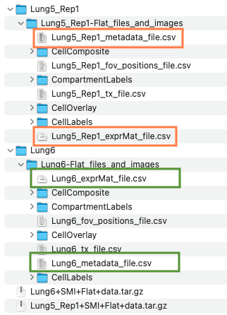
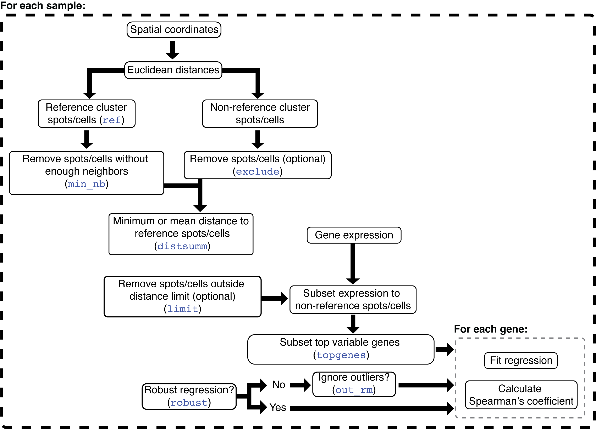

Detection of gene set spatial patterns and expression gradients in CosMx-SMI
2023-09-02
spatial_enrichment_gradients_smi.RmdThe package spatialGE can be
used to detect spatial patterns in gene expression at the gene and gene
set level. Data from multiple spatial transcriptomics platforms can be
analyzed, as long as gene expression counts per spot or cell are
associated with spatial coordinates of those spots/cells. The
spatialGE package is compatible
with outputs from the Visium workflow or the CosMx-SMI spatial
single-cell platform.
In this tutorial, the functions STenrich and
STgradient will be used to test for spatial gene set
enrichment and genes with gradients expression on a CosMx-SMI
data set from Non-Small Cell Lung Cancer (NSCLC).
How is spatialGE installed?
The spatialGE repository is available at GitHub and can
be installed via devtools. To install devtools
(in case it is not already installed in your R), please run the
following code:
if("devtools" %in% rownames(installed.packages()) == FALSE){
install.packages("devtools")
}After making sure devtools is installed, proceed to
install spatialGE:
# devtools::install_github("fridleylab/spatialGE")Spatial gene set enrichment and expression gradients in non-small cell lung cancer (NSCLC)
The CosMx-SMI platform generates single-cell level gene expression with associated x and y locations of the cells where measurements were taken. In specific for this data set, counts were generated for 960 genes for about 800K cells. The data was generated from eight tissue slices, however, in this tutorial only two slides will be analyzed.
To start, data can be downloaded by accessing the links below. Please, note that each sample is about 1.5G. It is also likely that registration in the website is necessary in order to download the data set.
Create a folder in your computer’s Desktop and name it “lung_cancer_smi”. Place the downloaded files within the folder created in the Desktop. The downloaded files are compressed. Please decompress the files by double clicking on each file. The decompression might take a few seconds, and then, two directories should be generated. The structure of the files is shown below:

The key files are shown enclosed in orange (Lung 5-1) and green (Lung 6) boxes. The “_exprMat_file.csv” file of each sample contains the gene counts. The “_metadata_file.csv” contains the cell x, y coordinates for each sample. Optionally, the “CellComposite” folder contains images that can be imported into the STlist (details later in this tutorial).
Now, that the data is ready, load the spatialGE
package:
library('spatialGE')Creating an STList (Spatial Transcriptomics List)
The starting point of a spatialGE analysis is the
creation of an STlist (S4 class object), which
stores raw and processed data. The STlist is created with the function
STlist, which can take data in multiple formats (see here
for more info or type ?STlist in the R console). In this
tutorial we will provide the paths to the exprMat and
metadata files for each of the two slides.
To load the files into an STlist, please use these commands:
exprmats <- c('~/Desktop/lung_cancer_smi/Lung5_Rep1/Lung5_Rep1-Flat_files_and_images/Lung5_Rep1_exprMat_file.csv',
'~/Desktop/lung_cancer_smi/Lung6/Lung6-Flat_files_and_images/Lung6_exprMat_file.csv')
metas <- c('~/Desktop/lung_cancer_smi/Lung5_Rep1/Lung5_Rep1-Flat_files_and_images/Lung5_Rep1_metadata_file.csv',
'~/Desktop/lung_cancer_smi/Lung6/Lung6-Flat_files_and_images/Lung6_metadata_file.csv')
lung <- STlist(rnacounts=exprmats, spotcoords=metas, samples=c('Lung5_Rep1', 'Lung6'))
#> Found CosMx-SMI data
#> Found 2 CosMx-SMI samples
#> Data read completed
#> Matching gene expression and coordinate data...
#> Converting counts to sparse matrices
#> Completed STlist!
#> To obtain count statistics, the summarize_STlist
function can be used:
summ_df = summarize_STlist(lung)
summ_df
#> # A tibble: 60 × 9
#> sample_name spots…¹ genes min_c…² mean_…³ max_c…⁴ min_g…⁵ mean_…⁶ max_g…⁷
#> <chr> <int> <int> <dbl> <dbl> <dbl> <int> <dbl> <int>
#> 1 Lung5_Rep1_fov… 2408 980 1 196. 1069 1 100. 315
#> 2 Lung5_Rep1_fov… 3744 980 2 326. 1872 2 136. 402
#> 3 Lung5_Rep1_fov… 2942 980 0 374. 2475 0 152. 473
#> 4 Lung5_Rep1_fov… 3617 980 0 363. 2246 0 149. 405
#> 5 Lung5_Rep1_fov… 3556 980 0 359. 1818 0 148. 389
#> 6 Lung5_Rep1_fov… 5272 980 0 328. 1721 0 142. 416
#> 7 Lung5_Rep1_fov… 3705 980 2 420. 1954 2 165. 489
#> 8 Lung5_Rep1_fov… 3120 980 0 467. 1891 0 182. 440
#> 9 Lung5_Rep1_fov… 3304 980 1 278. 1570 1 120. 402
#> 10 Lung5_Rep1_fov… 3174 980 0 354. 2002 0 141. 438
#> # … with 50 more rows, and abbreviated variable names ¹spotscells,
#> # ²min_counts_per_spotcell, ³mean_counts_per_spotcell,
#> # ⁴max_counts_per_spotcell, ⁵min_genes_per_spotcell,
#> # ⁶mean_genes_per_spotcell, ⁷max_genes_per_spotcellSome cells have zero counts. We can look at the distribution of
counts per cell for the first five and last five FOVs using the
distribution_plots function:
cp <- distribution_plots(lung, plot_type='violin', plot_meta='total_counts', samples=c(1:5, 56:60))
cp[['total_counts']]
Cells with zero counts, can be removed using the
filter_data function. The function can also be used to
remove all counts from specific genes. This option is useful in this
case, as CosMx-SMI panels include negative probe genes. While the
negative probes can be used in normalization of counts, in this tutorial
those genes will be removed. Negative probes in CosMx-SMI begin with the
token “NegPrb”:
lung <- filter_data(lung, spot_minreads=20, rm_genes_expr='^NegPrb')Transformation of spatially-resolved transcriptomics data
The function transform_data allows data transformation
using one of two possible options. The first options applies
log-transformation to the counts, after library size normalization
performed on each sample separately. The second option applies
variance-stabilizing transformation (SCT; Hafemeister and Satija (2019)), which is a
method increasingly used in single-cell and spatial transcriptomics
studies. To apply SCT transformation, use the following command:
lung <- transform_data(lung, method='sct')Detecting gene sets with spatial aggregation patterns
An important part of gene expression analysis is the use of gene sets
to make inferences about the functional significance of changes in
expression. Normally, this is achieved by conducting a Gene Set
Enrichment Analysis (GSEA). While GSEA can be completed in a similar
fashion to scRNA-seq, it is possible with the STenrich
function to test for gene sets that show spatial non-uniform enrichment.
In other words, STenrich tests whether expression of a gene
set is concentrated in one or few areas of the tissue.
The algorithm in STenrich is depicted in the following
diagram:

The STenrich function is a modification of the method
proposed by Hunter et al. (2021). The
steps in this modified version are as follows: First, Euclidean
distances are calculated among all spots/cells. Then, the gene
expression of the sample is subset to the genes within the gene set
being tested. If too few genes are left after subset
(min_genes), then the gene set is omitted for that sample.
The average expression and standard deviation of those genes is
calculated for each spot/cell. Next, spots/cells with gene set
expression above the average gene set expression across all spots/cells
are identified. The threshold to define these high gene set expression
spots is defined by the average gene set expression plus a number
min_sds of standard deviations. The sum of the Euclidean
distances between the high expression spots/cells is calculated.
The next step involves a permutation process, in which a null distribution is generated in order to test if the (sum of) distances among high expression spots are smaller than expected. To that end, a random sample of spots/cells (regardless of expression) is selected. The random sample has the same size as the number of high expression spots/cells. Then, the sum of distances among the randomly sampled spots/cells is calculated. The random selection is repeated as many times as requested (`reps``). Finally, a p-value is calculated by noting how many times the sum of random distances was higher than the sum of distances among high expression spots/cells. If the sum of random distances was most of the times higher than the sum of distances among high expression spots/cells, then the null hypothesis of no spatial aggregation is rejected (i.e., spots/cells with high gene set expression are more aggregated than expected by chance).
A few important notes about the algorithm to consider:
- Notice that the metric of enrichment is currently the average expression of the genes in a set within each ROI/spot/cell. Better metrics of gene set enrichment are available and will be soon available to use instead of average.
- Special attention should be paid to the reference genome used to annotate gene counts. The annotation of transcripts precedes any analysis in spatialGE. Nevertheless, if transcripts are annotated with a mouse genome (or other species), the user should use the appropriate gene set database, as gene names will likely not match to a gene set database with human gene names. Furthermore, but not less important, there might be problems with gene homology.
- The more permutations are requested, the longer the execution, but p-value estimates are more accurate.
- By increasing the number of standard deviations, fewer spots/cells are selected as “high expression” (stringent analysis), however, it becomes more challenging to detect gene sets that show evidence of spatial aggregation. Values between 1 to 2 standard deviations are likely suitable for most studies.
- By adjusting the minimum number of spots (
min_spots), the user has some rough control over the size of the structures to be studied. For example, small immune infiltrates could be detected with smaller number of minimum spots. Conversely, if tissue domain-level differences are sought, then a larger Minimum number of spots should be set. - Take note of the random seed number used for the test (Seed number parameter), in case you need to generate the same results later. Nevertheless, running the analysis several times with different seed numbers is advisable to check for consistency.
The first step to run STenrich is to obtain a list of
gene sets. Here, the msigdbr package will be used to obtain
HALLMARK gene sets:
# Load msigdbr
library('msigdbr')
# Get HALLMARK gene sets
gene_sets <- msigdbr(species='Homo sapiens')
gene_sets <- gene_sets[gene_sets[['gs_cat']] == "H", ]
# Convert gene set dataframe to list
# The result is a named list. The names of the list are the names of each gene set
# The contents of each list element are the gene names within each gene set
gene_sets <- split(x=gene_sets[['gene_symbol']], f=gene_sets[['gs_name']])Please keep in mind that it is assumed that HUGO gene names are used.
For CosMx-SMI and Visium, normally HUGO names are provided. If
spatial transcriptomics data from a non-human species is used, the
appropriate database should be used. Otherwise, spatialGE
will not be able to identify genes within the gene set.
The STenrich function can now be used. For this
analysis, 1000 replicates (reps=1000) will be used to
generate the null distribution. In addition, for a gene set to be
considered as highly expressed in cell, it should be expressed at least
over the average expression plus 1.5 standard deviations
(num_sds=1.5). Gene sets with less than five genes in the
sample (min_genes=5) and gene sets with less than 10 highly
expressed cells (min_units=10) will not be tested. Notice a
seed was set (seed=12345), which critical for replication
of the results in the future.
stenrich_df <- STenrich(lung, gene_sets=gene_sets,
reps=1000,
num_sds=1.5,
min_genes=5,
min_units=10,
seed=12345)
#> Running STenrich...
#> STenrich completed in 39.88 min.
#> The result of the function is a list of data frames, with one data frame per samples (FOV in this case). For example, this is the data frame for the first FOV in the STlist:
head(stenrich_df$Lung5_Rep1_fov_1)
#> # A tibble: 6 × 6
#> sample_name gene_set size_…¹ size_…² p_value adj_p…³
#> <chr> <chr> <int> <int> <dbl> <dbl>
#> 1 Lung5_Rep1_fov_1 HALLMARK_ANDROGEN_RESPONSE 16 102 0 0
#> 2 Lung5_Rep1_fov_1 HALLMARK_CHOLESTEROL_HOMEOST… 13 77 0 0
#> 3 Lung5_Rep1_fov_1 HALLMARK_COMPLEMENT 47 236 0 0
#> 4 Lung5_Rep1_fov_1 HALLMARK_ESTROGEN_RESPONSE_E… 30 216 0 0
#> 5 Lung5_Rep1_fov_1 HALLMARK_ESTROGEN_RESPONSE_L… 36 218 0 0
#> 6 Lung5_Rep1_fov_1 HALLMARK_HYPOXIA 43 213 0 0
#> # … with abbreviated variable names ¹size_test, ²size_gene_set, ³adj_p_valueEach row represents a test for the null hypothesis of no spatial aggregation in the expression of the set in the “gene_set” column. The column “size_test” is the number of genes of a gene set that were present in the FOV. The larger this number the better, as it indicates a better representation of the gene set in the sample. The “adj_p_value” is the multiple test adjusted p-value, which is the value used to decide if a gene set shows significant indications of a spatial pattern (adj_p_value < 0.05).
With a few lines of code, a visual summary can be generated that presents the gene sets with adj_p_value < 0.05 across FOVs for each tissue slide:
# Load tidyverse for data frame manipulation
library('tidyverse')
# Combine all samples in a single data frame
# Subset to gene sets showing significant evidence of spatial pattern (adj_p_value < 0.05) and
# proportion higher or equal than 0.3 of genes from a gene set present in sample
res <- bind_rows(stenrich_df) %>%
mutate(prop_gene_set=size_test/size_gene_set) %>%
filter(prop_gene_set >= 0.3 & adj_p_value < 0.05) %>%
mutate(slide=str_extract(sample_name, "Lung5_Rep1|Lung6")) %>%
select(slide, gene_set) %>%
mutate(gene_set=str_replace(gene_set, 'HALLMARK_', ''))
# Generate barplot showing the number of FOVs with siginificant evidence of spatial
# patterns for each tissue slide
ggplot(res) +
geom_bar(aes(x=gene_set)) +
xlab(NULL) +
theme(axis.text.x=element_text(angle=70, vjust=1, hjust=1)) +
facet_wrap(~slide)
The “NOTCH signaling” pathway showed spatial patterns less frequently
in the slide “Lung5_Rep1” compared to “Lung6”. With the function
STplot, the average gene set expression for this pathway
can be plotted. First, FOVs with and without NOTCH signaling spatial
patterns will be identified from “Lung5_Rep1” and “Lung6”
respectively.
bind_rows(stenrich_df) %>%
mutate(prop_gene_set=size_test/size_gene_set) %>%
filter(prop_gene_set >= 0.3 & adj_p_value >= 0.05) %>%
arrange(desc(prop_gene_set), desc(adj_p_value)) %>%
filter(gene_set == 'HALLMARK_NOTCH_SIGNALING') %>%
filter(str_detect(sample_name, "Lung5_Rep1")) %>%
slice_head(n=3)
#> # A tibble: 3 × 7
#> sample_name gene_set size_…¹ size_…² p_value adj_p…³ prop_…⁴
#> <chr> <chr> <int> <int> <dbl> <dbl> <dbl>
#> 1 Lung5_Rep1_fov_2 HALLMARK_NOTCH_SIGN… 14 34 0.982 1 0.412
#> 2 Lung5_Rep1_fov_6 HALLMARK_NOTCH_SIGN… 14 34 0.849 1 0.412
#> 3 Lung5_Rep1_fov_11 HALLMARK_NOTCH_SIGN… 14 34 0.988 1 0.412
#> # … with abbreviated variable names ¹size_test, ²size_gene_set, ³adj_p_value,
#> # ⁴prop_gene_set
bind_rows(stenrich_df) %>%
mutate(prop_gene_set=size_test/size_gene_set) %>%
filter(prop_gene_set >= 0.3 & adj_p_value < 0.05) %>%
arrange(desc(prop_gene_set), adj_p_value) %>%
filter(gene_set == 'HALLMARK_NOTCH_SIGNALING') %>%
filter(str_detect(sample_name, "Lung6")) %>%
slice_head(n=3)
#> # A tibble: 3 × 7
#> sample_name gene_set size_test size_…¹ p_value adj_p…² prop_…³
#> <chr> <chr> <int> <int> <dbl> <dbl> <dbl>
#> 1 Lung6_fov_4 HALLMARK_NOTCH_SIGNALING 14 34 0 0 0.412
#> 2 Lung6_fov_6 HALLMARK_NOTCH_SIGNALING 14 34 0 0 0.412
#> 3 Lung6_fov_7 HALLMARK_NOTCH_SIGNALING 14 34 0 0 0.412
#> # … with abbreviated variable names ¹size_gene_set, ²adj_p_value,
#> # ³prop_gene_setPlots can be generated like so:
qp <- STplot(lung, genes=gene_sets[names(gene_sets) == 'HALLMARK_NOTCH_SIGNALING'],
samples=c('Lung5_Rep1_fov_2', 'Lung5_Rep1_fov_6', 'Lung5_Rep1_fov_11',
'Lung6_fov_4', 'Lung6_fov_6', 'Lung6_fov_7'),
color_pal='YlOrBr')
ggpubr::ggarrange(plotlist=qp, ncol=3, nrow=2, common.legend=T)
Although expression of the NOTCH signaling pathway is higher overall in “Lung6”, the expression is not uniform, but rather is arranged in patterns within each FOV. Conversely, cells in FOVs of “Lung5_Rep1” that show high expression of the NOTCH signaling pathway are scattered across the tissue.
Since this expression of this pathway has been identified as
spatially aggregated, it might be of interest to know if there is
correspondence of NOTCH signaling with tissue domains. With the
STclust function, tissue domains can be identified.
To speed up computations, the STlist will be subset to only the FOVs in the plots
keep_fovs <- c('Lung5_Rep1_fov_2', 'Lung5_Rep1_fov_6', 'Lung5_Rep1_fov_11',
'Lung6_fov_4', 'Lung6_fov_6', 'Lung6_fov_7')
rm_fovs = summ_df$sample_name[!(summ_df$sample_name %in% keep_fovs)]
lung_subset <- filter_data(lung, rm_tissue=rm_fovs)
lung_subset <- STclust(lung_subset, ws=0.02, ks='dtc')
#> STclust started.
#> STclust completed in 1.22 min.
#> Optinally, if tissue images are available for some or all the FOVs,
users can upload those to the STlist for display next to the other plot
types available in spatialGE. Users can upload an entire
folder of images to the STlist, as long as image files have the same
names as the FOVs within the STlist (e.g., “Lung5_Rep1_fov_2”,
“Lung6_fov_4”, etc). Keep in mind, however, this will increase the size
of the STlist significantly, especially in CosMx experiment that usually
contain many FOVs. Here, only the images for the FOVs on which domain
prediction was done will be uploaded. To do that, the corresponding
images need to be renamed. Please, locate in the downloaded data the
folder named “CellComposite” (there is one for each slide). The files
are named “CellComposite_F001.jpg”, “CellComposite_F002.jpg”, and so on.
The consecutive numbers indicate the FOV id. Now please rename the files
as follows:
- For the “CellComposite” folder within the folder of slide “Lung5_Rep1”, please change: “CellComposite_F002.jpg”, “CellComposite_F006.jpg”, and “CellComposite_F011.jpg” to “Lung5_Rep1_fov_2.jpg”, “Lung5_Rep1_fov_6.jpg”, and “Lung5_Rep1_fov_11.jpg” respectively.
- For the “CellComposite” folder within the folder of slide “Lung6”, please change, please rename “CellComposite_F004.jpg”, “CellComposite_F006.jpg”, and “CellComposite_F007.jpg” to “Lung6_fov_4.jpg”, “Lung6_fov_6.jpg”, and “Lung6_fov_7.jpg” respectively.
Now, upload the images to the STlist with the
load_images function:
lung_subset <- load_images(lung_subset, images='~/Desktop/lung_cancer_smi/Lung5_Rep1/Lung5_Rep1-Flat_files_and_images/CellComposite')
#> Image for sample Lung6_fov_4 was not found.
#> Image for sample Lung6_fov_6 was not found.
#> Image for sample Lung6_fov_7 was not found.The images for slide “Lung6” were not found, which are in the
corresponsing folder. The load_images function is ran again
to add images from “Lung6”:
lung_subset <- load_images(lung_subset, images='~/Desktop/lung_cancer_smi/Lung6/Lung6-Flat_files_and_images/CellComposite')
#> Image for sample Lung5_Rep1_fov_2 was not found.
#> Image for sample Lung5_Rep1_fov_6 was not found.
#> Image for sample Lung5_Rep1_fov_11 was not found.The function plot_image is used to generate the ggplot
objects containing the images:
ti <- plot_image(lung_subset)The domains can be plotted with the STplot function
too.
dom_p <- STplot(lung_subset, ks='dtc', ws=0.02, deepSplit=F,
color_pal='discreterainbow')
ggpubr::ggarrange(dom_p$Lung5_Rep1_fov_2_stclust_spw0.02_dsplFalse,
ti$image_Lung5_Rep1_fov_2,
dom_p$Lung5_Rep1_fov_6_stclust_spw0.02_dsplFalse,
ti$image_Lung5_Rep1_fov_6,
dom_p$Lung5_Rep1_fov_11_stclust_spw0.02_dsplFalse,
ti$image_Lung5_Rep1_fov_11,
dom_p$Lung6_fov_4_stclust_spw0.02_dsplFalse,
ti$image_Lung6_fov_4,
dom_p$Lung6_fov_6_stclust_spw0.02_dsplFalse,
ti$image_Lung6_fov_6,
dom_p$Lung6_fov_7_stclust_spw0.02_dsplFalse,
ti$image_Lung6_fov_7,
ncol=4, nrow=3)
# If no tissue images are available:
# ggpubr::ggarrange(plotlist=dom_p, ncol=3, nrow=2)Now, to identify the domains, differential gene expression can be performed:
deg <- STdiff(lung_subset, w=0.02, k='dtc', deepSplit=F, test_type='wilcoxon')
#> Testing STclust assignment (w=0.02, dtc deepSplit=False)...
#> Running Wilcoxon's tests...
#> Completed Wilcoxon's tests (12.51 min).
#> STdiff completed in 12.52 min.
#> Then, the top 3 DE genes per cluster in the samples showing NOTCH signaling spatial patterns are identified:
bind_rows(deg) %>%
filter(adj_p_val < 0.05 & abs(avg_log2fc > 0.05)) %>%
filter(sample %in% c('Lung6_fov_4', 'Lung6_fov_6', 'Lung6_fov_7')) %>%
group_by(sample, cluster_1) %>%
slice_head(n=3)
#> # A tibble: 30 × 6
#> # Groups: sample, cluster_1 [10]
#> sample gene avg_log2fc cluster_1 wilcox_p_val adj_p_val
#> <chr> <chr> <dbl> <chr> <dbl> <dbl>
#> 1 Lung6_fov_4 EGFR 0.738 1 2.62e-171 1.08e-168
#> 2 Lung6_fov_4 GPNMB 0.705 1 1.29e-136 3.10e-134
#> 3 Lung6_fov_4 KRT5 0.613 1 5.86e-126 9.92e-124
#> 4 Lung6_fov_4 CD74 0.645 2 2.48e-220 3.56e-217
#> 5 Lung6_fov_4 VIM 0.565 2 7.80e-218 7.49e-215
#> 6 Lung6_fov_4 HLA-DRB1 0.712 2 5.33e-194 3.21e-191
#> 7 Lung6_fov_4 KRT13 1.11 3 1.61e-117 2.32e-115
#> 8 Lung6_fov_4 KRT16 0.993 3 4.89e-107 5.42e-105
#> 9 Lung6_fov_4 ANXA1 0.594 3 6.77e- 78 4.75e- 76
#> 10 Lung6_fov_6 HMGB2 0.273 1 2.52e- 55 2.69e- 53
#> # … with 20 more rowsExpression of KRT genes in domains 1 and 2 of FOVs “Lung6_fov_4” and “Lung6_fov_7”, and domains 2 and 4 of “Lung6_fov_6” are indicative of tumor cells. In those domains (with the exception of 4 in “Lung6_fov_6”), there seems to be an overlap with the areas of of NOTCH signaling, which indicates that in slide “Lung6”, the tumor compartment is spatially enriched for NOTCH signaling.
Identifcation of genes presenting expression spatial gradients
Since the tumor areas have been visually identified, it is possible
now to ascertain which genes show expression that varies with distance
within the tumor compartment. In the FOVs “Lung6_fov_4”, “Lung6_fov_7”,
and “Lung6_fov_6”, the domain 3 seems to be surrounding the tumor
compartment. Hence, domain 3 will be used as reference domain to test
for genes for which expression increases or decreases with distance from
domain 3. This test is performed by the STgradient
function. The following diagram depicts the STgradient
algorithm:

In STgradient, the spatial coordinates are used to
calculate Euclidean distances of each cell to each of the other cells.
The reference domain is the domain from which the distances will be
calculated (domain 3 in this case). The non-reference domain(s) are the
domain(s) on which the user wants to study gradients. Next, removes
isolated spots/cells in the reference domain (i.e., have a number of
immediate neighbors smaller than parameter min_nb). The
min_nb parameter intends to reduce the effects of small
“pockets” of the reference domain on the correlation coefficient. At
this point, either the minimum or average distance of each non-reference
cell to each reference cell is calculated (distsumm). The
minimum distance is easier to interpret, however, it is more sensitive
to highly fragmented reference domains. On the other hand, the
interpretability of the average distance is not as easy as the minimum
distance, but it might detect in a better way the gradients when the
reference domain is distributed across the sample. Next, the gene
expression data is subset to the non-reference spots/cells, and the top
variable genes (topgenes) are selected. Results will be
produced only for those genes. Depending on the user’s selection, the
ordinary least squares (OLS) or robust regression is used to calculate
the slope of the regression line between the minimum/average distance
and the expression of a gene. If OLS was selected, users might opt to
remove outliers via the interquartile method. Finally, the Spearman’s
coefficient is calculated in addition to the regression line
coefficient. The slope indicates the direction of the correlation. If
positive, the gene expression tends to be higher when farther from the
reference domain. If negative, gene expression is higher when closer to
the reference domain. The interpretation of the sign for the Spearman’s
coefficient is similar, however its magnitude indicates how strong the
correlation is between gene expression and distance to the reference
domain.
The STgradient function can be executed with these
commands, in order to test for gradients within the tumor compartment.
First, it is necessary to find the name of the column in
lung_subset@spatial_meta containing the domain
assigments:
colnames(lung_subset@spatial_meta$Lung5_Rep1_fov_2)
#> [1] "libname" "xpos"
#> [3] "ypos" "total_counts"
#> [5] "total_genes" "stclust_spw0.02_dsplFalse"The name of the column is stclust_spw0.02_dsplFalse
(STclust results using spatial weight of 0.02 and DynamicTreeCuts with
no deepSplit). This name is used in the annot argument of
STgradient:
stg <- STgradient(lung_subset,
topgenes=1000,
annot='stclust_spw0.02_dsplFalse',
ref=3,
samples=c('Lung6_fov_4', 'Lung6_fov_6', 'Lung6_fov_7'),
distsumm='min',
robust=T)
#> STgradient completed in 0.42 min.
#> Here are the first few rows of the STgradient result for
sample “Lung6_fov_4”:
head(stg$Lung6_fov_4)
#> # A tibble: 6 × 8
#> sample_name gene min_lm_coef min_lm_pval min_spe…¹ min_sp…² min_sp…³ min_p…⁴
#> <chr> <chr> <dbl> <dbl> <dbl> <dbl> <dbl> <chr>
#> 1 Lung6_fov_4 EGFR -0.000234 1.69e-42 -0.255 5.49e-44 5.24e-41 NA
#> 2 Lung6_fov_4 KRT6A -0.000242 1.70e-40 -0.250 2.21e-42 1.06e-39 NA
#> 3 Lung6_fov_4 HLA-B 0.000265 1.06e-42 0.249 8.34e-42 2.66e-39 NA
#> 4 Lung6_fov_4 S100A2 -0.000172 4.16e-28 -0.207 4.10e-29 9.80e-27 NA
#> 5 Lung6_fov_4 KRT19 -0.000197 9.85e-27 -0.190 9.66e-25 1.85e-22 NA
#> 6 Lung6_fov_4 SEC61G -0.000168 7.60e-24 -0.185 1.06e-23 1.69e-21 NA
#> # … with abbreviated variable names ¹min_spearman_r, ²min_spearman_r_pval,
#> # ³min_spearman_r_pval_adj, ⁴min_pval_commentThe key columns to look ar are min_spearman_r and
min_spearman_r_pval_adj. Now, to find genes with
significant spatial gradients across the three samples, these commands
can be used:
bind_rows(stg) %>%
arrange(desc(abs(min_spearman_r))) %>%
group_by(sample_name) %>%
slice_head(n=5) %>%
ungroup() %>%
arrange(gene)
#> # A tibble: 15 × 8
#> sample_name gene min_lm_coef min_lm_pval min_s…¹ min_sp…² min_sp…³ min_p…⁴
#> <chr> <chr> <dbl> <dbl> <dbl> <dbl> <dbl> <chr>
#> 1 Lung6_fov_4 EGFR -0.000234 1.69e-42 -0.255 5.49e-44 5.24e-41 NA
#> 2 Lung6_fov_6 FOS -0.0000785 7.82e-42 -0.252 1.38e-44 6.59e-42 NA
#> 3 Lung6_fov_7 G6PD -0.000107 9.58e-10 -0.111 8.64e-10 2.07e- 7 NA
#> 4 Lung6_fov_4 HLA-B 0.000265 1.06e-42 0.249 8.34e-42 2.66e-39 NA
#> 5 Lung6_fov_6 KRT16 -0.000119 1.24e-32 -0.221 2.78e-34 5.30e-32 NA
#> 6 Lung6_fov_4 KRT19 -0.000197 9.85e-27 -0.190 9.66e-25 1.85e-22 NA
#> 7 Lung6_fov_4 KRT6A -0.000242 1.70e-40 -0.250 2.21e-42 1.06e-39 NA
#> 8 Lung6_fov_6 KRT6B -0.000114 3.83e-40 -0.241 1.09e-40 2.60e-38 NA
#> 9 Lung6_fov_6 MT1X -0.000169 1.94e-53 -0.278 4.65e-54 4.43e-51 NA
#> 10 Lung6_fov_7 NDRG1 0.0000643 8.81e- 6 0.122 1.22e-11 3.90e- 9 NA
#> 11 Lung6_fov_7 NEAT1 0.000141 3.55e-10 0.125 5.32e-12 2.55e- 9 NA
#> 12 Lung6_fov_6 NTRK2 0.000132 6.21e-45 0.248 3.94e-43 1.25e-40 NA
#> 13 Lung6_fov_7 S100A10 -0.000166 4.43e-17 -0.151 5.06e-17 4.84e-14 NA
#> 14 Lung6_fov_4 S100A2 -0.000172 4.16e-28 -0.207 4.10e-29 9.80e-27 NA
#> 15 Lung6_fov_7 TYK2 -0.0000729 1.43e- 7 -0.105 5.91e- 9 1.13e- 6 NA
#> # … with abbreviated variable names ¹min_spearman_r, ²min_spearman_r_pval,
#> # ³min_spearman_r_pval_adj, ⁴min_pval_commentIt can be seen from these results that multiple keratin genes show spatial gradients, all of them with negative Spearman’s coefficients (cells close to domain 3 tend to have higher keratin expression). Other such HLA-B and NDRG1 have higher expression in cells far from domain 3:
qp2 <- STplot(lung_subset, genes=c('KRT6A', 'HLA-B'), samples='Lung6_fov_4', color_pal='YlOrBr')
ggpubr::ggarrange(plotlist=qp2, common.legend=T)Here are the results for genes within the NOTCH signaling pathway:
bind_rows(stg) %>%
arrange(desc(abs(min_spearman_r))) %>%
filter(gene %in% gene_sets[['HALLMARK_NOTCH_SIGNALING']]) %>%
filter(min_spearman_r_pval_adj < 0.05)
#> # A tibble: 12 × 8
#> sample_name gene min_lm_coef min_lm_pval min_spe…¹ min_s…² min_s…³ min_p…⁴
#> <chr> <chr> <dbl> <dbl> <dbl> <dbl> <dbl> <chr>
#> 1 Lung6_fov_4 JAG1 -8.61e-5 0.0000000323 -0.108 6.94e-9 1.66e-7 NA
#> 2 Lung6_fov_4 FZD7 -3.54e-8 0.00000144 -0.0937 4.77e-7 7.60e-6 NA
#> 3 Lung6_fov_6 NOTCH3 -2.60e-5 0.00000127 -0.0909 6.51e-7 1.38e-5 NA
#> 4 Lung6_fov_4 NOTCH1 -9.88e-9 0.0000720 -0.0765 4.01e-5 4.40e-4 NA
#> 5 Lung6_fov_6 FZD7 -2.10e-5 0.0000897 -0.0698 1.34e-4 1.54e-3 NA
#> 6 Lung6_fov_6 WNT5A 2.51e-5 0.000388 0.0664 2.85e-4 2.92e-3 NA
#> 7 Lung6_fov_7 WNT5A -1.06e-7 0.0000706 -0.0657 2.83e-4 5.77e-3 NA
#> 8 Lung6_fov_7 FZD1 -5.03e-9 0.000364 -0.0635 4.52e-4 7.87e-3 NA
#> 9 Lung6_fov_7 MAML2 -3.64e-9 0.000494 -0.0612 7.29e-4 1.07e-2 NA
#> 10 Lung6_fov_4 NOTCH3 -1.20e-8 0.000783 -0.0598 1.33e-3 9.02e-3 NA
#> 11 Lung6_fov_6 NOTCH1 -7.64e-8 0.000929 -0.0584 1.41e-3 1.07e-2 NA
#> 12 Lung6_fov_7 PPARD -1.65e-9 0.00401 -0.0501 5.65e-3 4.51e-2 NA
#> # … with abbreviated variable names ¹min_spearman_r, ²min_spearman_r_pval,
#> # ³min_spearman_r_pval_adj, ⁴min_pval_commentAlthough the correlations in genes from this pathway are not as large as and those for KRT6A and HLA-B (i.e., lower absolute Spearman’s coefficient), it can be seen that the genes NOTCH1 and NOTCH3 show evidence of expression gradients in FOVs ‘Lung6_fov_4’ and ‘Lung6_fov_6’.
References
Session Info
sessionInfo()
#> R version 4.1.2 (2021-11-01)
#> Platform: x86_64-apple-darwin17.0 (64-bit)
#> Running under: macOS Big Sur 10.16
#>
#> Matrix products: default
#> BLAS: /Library/Frameworks/R.framework/Versions/4.1/Resources/lib/libRblas.0.dylib
#> LAPACK: /Library/Frameworks/R.framework/Versions/4.1/Resources/lib/libRlapack.dylib
#>
#> locale:
#> [1] en_US.UTF-8/en_US.UTF-8/en_US.UTF-8/C/en_US.UTF-8/en_US.UTF-8
#>
#> attached base packages:
#> [1] stats graphics grDevices utils datasets methods base
#>
#> other attached packages:
#> [1] forcats_0.5.1 stringr_1.5.0 dplyr_1.1.0 purrr_1.0.1
#> [5] readr_2.1.2 tidyr_1.3.0 tibble_3.2.1 ggplot2_3.3.5
#> [9] tidyverse_1.3.1 msigdbr_7.4.1 spatialGE_1.2.0
#>
#> loaded via a namespace (and not attached):
#> [1] utf8_1.2.2 reticulate_1.24 tidyselect_1.2.0
#> [4] htmlwidgets_1.5.4 grid_4.1.2 Rtsne_0.15
#> [7] ggpolypath_0.1.0 munsell_0.5.0 codetools_0.2-18
#> [10] ragg_1.2.5 ica_1.0-2 future_1.23.0
#> [13] miniUI_0.1.1.1 withr_2.5.0 colorspace_2.0-2
#> [16] highr_0.9 knitr_1.37 rstudioapi_0.13
#> [19] Seurat_4.1.0 ROCR_1.0-11 ggsignif_0.6.3
#> [22] tensor_1.5 listenv_0.8.0 labeling_0.4.2
#> [25] polyclip_1.10-0 farver_2.1.0 rprojroot_2.0.2
#> [28] parallelly_1.30.0 vctrs_0.6.2 generics_0.1.2
#> [31] xfun_0.31 R6_2.5.1 khroma_1.8.0
#> [34] locfit_1.5-9.4 fields_14.1 bitops_1.0-7
#> [37] spatstat.utils_3.0-1 cachem_1.0.6 assertthat_0.2.1
#> [40] promises_1.2.0.1 scales_1.2.0 gtable_0.3.0
#> [43] globals_0.14.0 goftest_1.2-3 spam_2.9-1
#> [46] rlang_1.1.1 systemfonts_1.0.4 splines_4.1.2
#> [49] rstatix_0.7.0 lazyeval_0.2.2 spatstat.geom_3.0-6
#> [52] broom_0.7.12 yaml_2.2.2 reshape2_1.4.4
#> [55] abind_1.4-5 modelr_0.1.8 backports_1.4.1
#> [58] httpuv_1.6.5 tools_4.1.2 ellipsis_0.3.2
#> [61] spatstat.core_2.3-2 jquerylib_0.1.4 RColorBrewer_1.1-2
#> [64] BiocGenerics_0.40.0 dynamicTreeCut_1.63-1 wordspace_0.2-6
#> [67] ggridges_0.5.3 Rcpp_1.0.10 plyr_1.8.6
#> [70] RCurl_1.98-1.5 ggpubr_0.4.0 rpart_4.1-15
#> [73] deldir_1.0-6 pbapply_1.5-0 viridis_0.6.2
#> [76] cowplot_1.1.1 zoo_1.8-9 SeuratObject_4.0.4
#> [79] haven_2.4.3 ggrepel_0.9.1 cluster_2.1.2
#> [82] fs_1.5.2 magrittr_2.0.2 data.table_1.14.2
#> [85] scattermore_0.7 lmtest_0.9-39 reprex_2.0.1
#> [88] RANN_2.6.1 fitdistrplus_1.1-6 matrixStats_0.61.0
#> [91] fftwtools_0.9-11 hms_1.1.1 patchwork_1.1.1
#> [94] mime_0.12 evaluate_0.14 xtable_1.8-4
#> [97] jpeg_0.1-9 sparsesvd_0.2 readxl_1.3.1
#> [100] gridExtra_2.3 compiler_4.1.2 maps_3.4.0
#> [103] KernSmooth_2.23-20 crayon_1.4.2 htmltools_0.5.2
#> [106] tiff_0.1-11 mgcv_1.8-38 later_1.3.0
#> [109] tzdb_0.3.0 lubridate_1.8.0 DBI_1.1.2
#> [112] tweenr_1.0.2 dbplyr_2.1.1 MASS_7.3-54
#> [115] babelgene_21.4 Matrix_1.4-1 car_3.0-12
#> [118] cli_3.6.0 parallel_4.1.2 dotCall64_1.0-1
#> [121] igraph_1.2.11 pkgconfig_2.0.3 pkgdown_2.0.7
#> [124] plotly_4.10.0 spatstat.sparse_3.0-0 xml2_1.3.3
#> [127] bslib_0.3.1 iotools_0.3-2 rvest_1.0.2
#> [130] digest_0.6.29 sctransform_0.3.3 RcppAnnoy_0.0.19
#> [133] spatstat.data_3.0-0 rmarkdown_2.14 cellranger_1.1.0
#> [136] leiden_0.3.9 uwot_0.1.11 EBImage_4.36.0
#> [139] shiny_1.7.1 lifecycle_1.0.3 nlme_3.1-153
#> [142] jsonlite_1.7.3 carData_3.0-5 desc_1.4.2
#> [145] viridisLite_0.4.0 fansi_1.0.2 pillar_1.8.1
#> [148] lattice_0.20-45 fastmap_1.1.0 httr_1.4.2
#> [151] survival_3.4-0 glue_1.6.2 png_0.1-7
#> [154] ggforce_0.3.3 stringi_1.7.6 sass_0.4.0
#> [157] textshaping_0.3.6 memoise_2.0.1 irlba_2.3.5
#> [160] future.apply_1.8.1